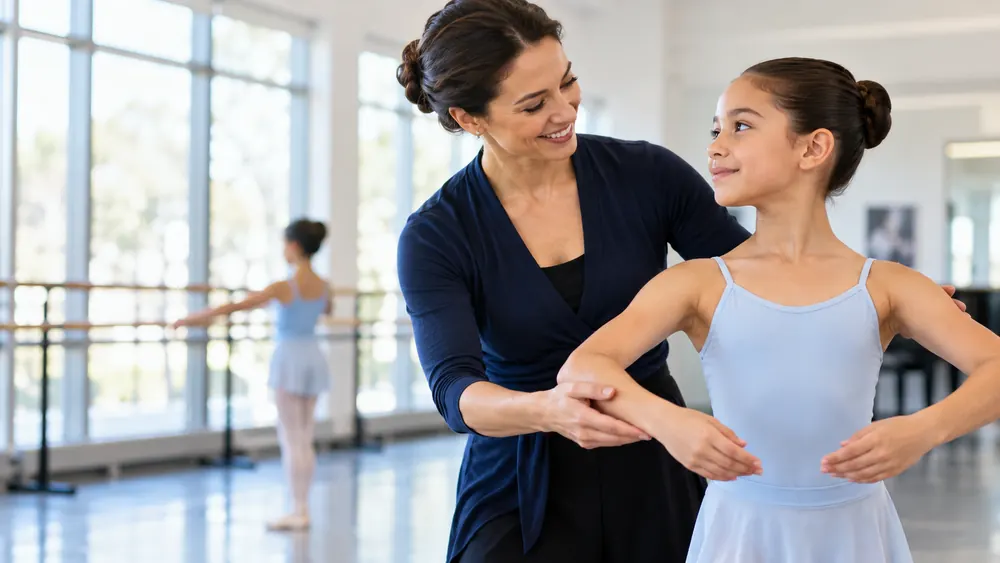
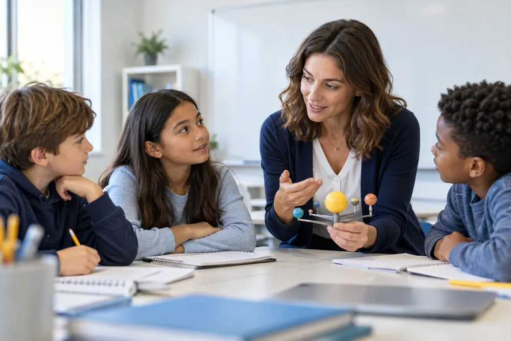
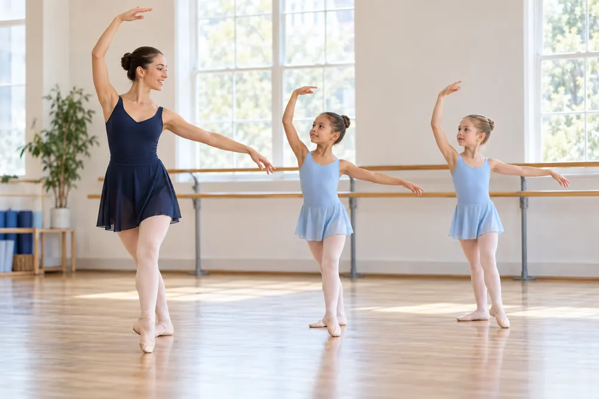

Sürekli Gelişim
Eğiticiler için düzenli eğitim
ve atölye programları

İNSAN KAYNAKLARI
NOVA’da eğitici gelişimi, öğrencilerimizin çok yönlü gelişimini destekleyen en önemli yapı taşlarından biridir. Eğiticilerimizin mesleki, pedagojik ve kişisel gelişimlerini sürekli kılmak için kapsamlı bir program yürütüyoruz.
Eğiticiler için düzenli eğitim
ve atölye programları
Alanında yetkin akademisyen
ve uzmanlarla iş birliği
Ulusal ve uluslararası iyi örneklerle
zenginleşen programlar
Eğitim kalitesine doğrudan
yansıyan gelişim modeli

Güçlü öğretmenler,
güçlü yarınlar inşa eder.
YAKLAŞIMIMIZ
Eğitici gelişim programlarımız, yalnızca teknik bilgi aktarımını değil; aynı zamanda pedagojik yaklaşımın, iletişim becerilerinin, öğrenci psikolojisi ve değer temelli eğitim anlayışının gelişimini de kapsar.
Eğiticilerimizin alanlarındaki yenilikleri takip etmelerini, ulusal ve uluslararası iş birlikleriyle kendilerini sürekli geliştirmelerini destekleriz.
EĞİTİCİ GELİŞİM SÜRECİ
Eğitici ihtiyaçları ve gelişim alanları belirlenir.
Uzmanlarla birlikte kişiye özel gelişim planları oluşturulur.
Eğitimler, atölyeler ve mentorluk programları hayata geçirilir.
Gelişim ölçülür, geri bildirimlerle yeni hedefler belirlenir.
GELİŞİM ALANLARI
Eğiticilerimizin mesleki yolculuklarına katkı sağlayan başlıca gelişim alanları:

Etkili öğretim yöntemleri, öğrenci merkezli yaklaşım ve sınıf yönetimi.

Sanat, spor ve yetenek alanlarına özel uygulamalı eğitimler.
Uzmanlarla iş birlikleri, değişim ve sertifika programları.
İletişim, liderlik, motivasyon ve değer temelli eğitim çalışmaları.
DAİMA DAHA İYİSİ İÇİN
NOVA, güçlü ve nitelikli bir eğitim kadrosuyla daha iyi bir gelecek inşa etmeye kararlıdır.
İNSAN KAYNAKLARI İLE İLETİŞİM